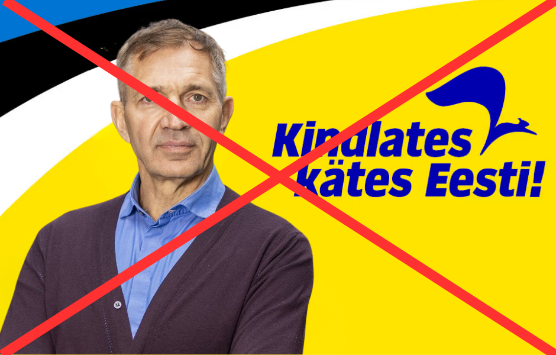
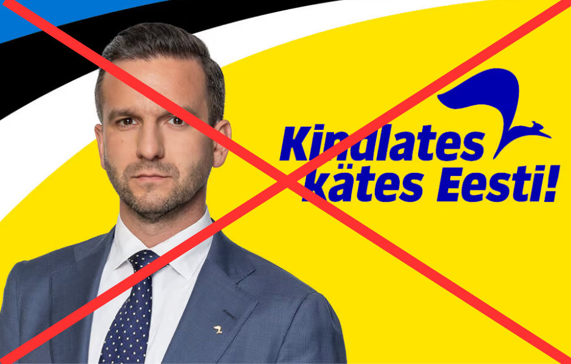

Kes on Reformierakonna Tallinna linnapeakandidaat?
Eesti suurim linn väärib linnapea kandidaati, sest ilma linnapeata oleks meil ju vald. Igatahes, Reformierakond soovib linnakodanikele pakkuda vaid parimat või parimast järgmist. Käesolevalt lehelt saab murelik linnakodanik konkreetse ülevaate sellest, kes on parajasti Reformierakonna valitsev linnapeakandidaat Tallinnas. Samuti on lehekülg ultimatiivse tõe allikas Jevgeni Ossinovskile, kes meist talle parajasti nuga selga löömas on.
Kui midagi peaks olema muutunud viimasel hetkel, jõuavad muudatused mõne päeva jooksul kindlasti ka siia lehele. Seega ärge olge väga pahased, kui Aktuaalsest Kaamerast kuulete nimesid nagu Paet, Riisalo, Alender, Vaga, Tõnis Palts või mõni teine tubli inimene.
Maris Lauri on hetkel Kristen Michalile ja Jevgeni Ossinovskile teadaolevalt Reformierakonna Tallinna linnapeakandidaat.

AEGUNUD INFO. KRISTEN MICHAL VABANDAB KÕIGI EES. Urmas Sõõrumaa on Tallinna linnapeakandidaat. Tema taga on peale oravate veel ninasarvikud ja terve Rotermanni kvartal. Meile teadaolevad isiklikud ärihuvid on mees lubanud jätta tahaplaanile, seega linnarahvas, ärge üldse muretsege. Teil on Sõõruka ausõna.

AEGUNUD INFO. KRISTEN MICHALIL POLNUD SELLEGA PISTMIST. Pärtel‑Peeter Pere on tulevane uue põlvkonna linnapea, kes ihkab Mihhail Kõlvarti kohta ja selle ta Ossinovskilt ka võtab. Tallinn väärib korruptsioonivabadust linna poolt tehtavatel hangetel.